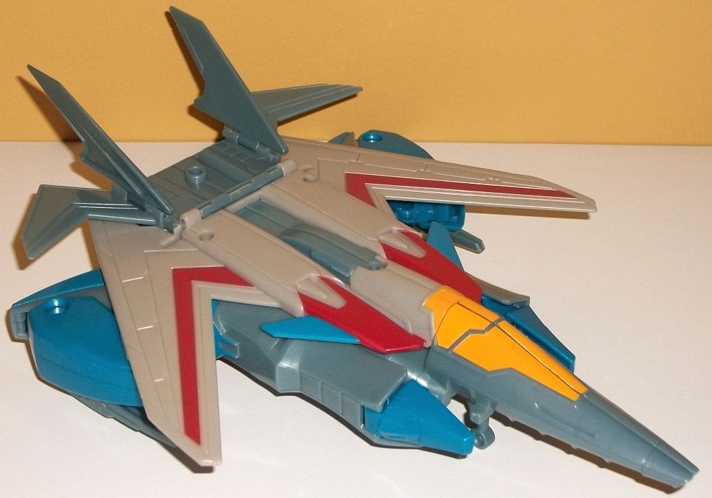

Allegiance : Decepticon
Difficulty of Transformation : Very Easy
Color Scheme : Moderately dark milky red, moderately dark blue, and some light orange and silver
Individual Rating : 3.9
 Lancelon
Lancelon
Allegiance
: Decepticon
Difficulty of Transformation
: Very
Easy
Color Scheme
: Moderately dark milky
red, moderately dark blue, and some light orange and silver
Individual Rating
: 3.9
Lancelon's alternate
mode is a sword... I guess it's supposed to be a lance judging by his name,
of course, but it's not really one. It doesn't have the slim proportions
on the blade, for one. Anyways, this mode is pretty obviously his robot
with a handle instead of a head and the blade sticking out beyond the feet.
It IS a pretty nifty diagonal blade, but as for the rest of this mode...
c'mon, man. The robot mode has actually been STRETCHED OUT a bit to encompass
MORE of this mode than it otherwise would have if most of the robot mode
had just stayed as part of the hilt instead. Now, if you look at Lancelon
from the other side, the blade more clearly extends the entire length with
its fairly dark blue coloration, with the robot mode only a big piece of
kibble on the backside, but from this view you can't plug Lancelon into
Starscream's chest for the Power Surge gimmick. Anyways, the color scheme
here is pretty basic, with the aforementioned blue blade and most of the
robot parts being a similarly somewhat dark, but milky red color-- this
basic color scheme is okay, although nothing great. The light orange paint
on Lancelon's feet, shoulders, and chest complements the red fairly well,
and also gives the color scheme a pretty nice light color for balance.
The fact it's slathered over the obvious Decepticon emblem in the middle
of his chest-- instead of a bit of purple paint being there-- looks bad,
though. As for the mold detailing, as you'd expect from a RID2015 toy,
it's pretty basic. The blade only has very basic lines on it, and the robot
mode mostly just has the basic shape of the legs and arms on it. There
is a bit of "armor-like" detail on the shoulders, though that could also
be to make it look slightly more like the hilt of this kinda ridiculous-looking
blade.
Transforming Lancelon
to robot mode is exceedingly simple-- just fold up the sword blade up and
around the backside, and the head automaticallly rotates up as well, and
there's your robot mode. The blade definitely is there on his back pretty
obviously, but at least it's largely out of the way in this mode. The handle
comes down to a fine point on the top of his head, which admittedly looks
a little goofy but does give him a nice forehead point to the "knight-like"
look of his noggin. Lancelon's got two side antennae, with an orange knight
"helmet" over his head, with a slim bit of silver paint on the "exposed"
portion, and red eyes and a sneer because he's Decepticon-allied. Unfortunately
like basically all of the Power Surge Mini-Cons, he's a plastic statue
in this mode-- no articulation whatsoever. Now that his body is collapsed
together the proportions from the front are fairly good in their own RID2015-stylized
way, with large lower arms and legs and relatively small/nonexistent upper
arms and legs. His waist is also a bit small proportionally, as is common
in the line. From a side view, however, Lancelon looks a bit 2-D, which
is unfortunate. Really, just put him facing forward and leave him there
in this mode, there's not much else you can do with him.
 Starscream
Starscream

Allegiance
: Decepticon
Difficulty of Transformation
: Easy
Color Scheme:
Light milky gray,
dull milky bluish gray, semi-metallic blue, and some dark red, orangish
"cheese" yellow, black, silver, and dark purple
Individual Rating
: 7.2
Starscream's back for
RID2015, and his look is a bit more... traditional... than his
Prime
version. In vehicle mode, though, he's still a fair bit different than
a G1-redo; he's got a very angular, slim jet mode, with wings that sweep
back and then far forward, and long tailfins that are quite angular as
well. His nosecone is very long, with futuristic streamlined details on
the cockpit. Beyond these couple of details, though, Starscream follows
the RID2015-usual of having relatively little mold detailing, with just
some angular stripes here and there on the wings and body. Unfortunately,
although he's supposed to be quite sleek in this mode, the amount of robot
undercarriage junk throws off that look quite a bit. The robot legs are
on the side and under the rear section of the nosecone, as well as the
front part of the jet body. If that was it it wouldn't be TOO bad, but
his arms and shoulders also poke out VERY obviously from underneath his
wings-- the wings aren't nearly large enough to cover up these big suckers.
They really just ruin the look of the wings-- though at least on the underside
of the wings Starscream has one null ray on each lower arm permanently
affixed, giving him firepower in this mode. The color scheme uses the typical
Starscream light milky (blah) gray for most of the main body of the jet,
with the main contrast color being a dull milky bluish gray-- used on the
rear of the jet mode, his tailfins, a stripe down the center of the body,
the front two-thirds of the nosecone for some odd reason, and on some of
the obvious robot parts like the lower legs and parts of the shoulders.
There's also some semi-metallic blue, mostly used for robot mode but--
because of all the kibble-- still visible in this mode. It's pretty obvious
on the robot feet, shoulders, and lower arms, and it's painted on the small
fins coming off of Starscream's main body, too. Although I'm not fond of
that boring light gray, the blue contrasts with it fairly well, and the
dull bluish gray serves as a nice "in-between color" that both contrasts
and complements both of the other colors. Finally, to give this mode some
much-needed "warm" colors, there's some dark red paint on the intakes and
on the front of the main wings, as well as some orangish yellow paint on
the cockpit. They add a bit more variety, but really there should have
been some more red, especially for Starscream. Of note is that there is
a flip-out landing gear underneath the cockpit for this mode to keep it
level (the rear bits go down far enough where landing gear aren't needed
back there). A Power Surge-sized Mini-Con can also plug into the top rear
of this mode, in between the tailfins.
Starscream's transformation
isn't super-simple like the other Power Surge toys, though I still wouldn't
call it complex. The main step here is that the lower legs fold down over
the sides of the cockpit, which then separates into two halves and then
rotate forward to become Starscream's lower legs. Then it's just a matter
of folding out the legs from underneath the wings and flipping back the
tailfins and rear thruster pieces onto Starscream's robot back, and you're
done. The end result looks quite good, and is easily the best robot mode
out of the "standard" $30 U.S. Power Surge toys. There's obvious cockpit
window halves behind his lower legs, but other than that the kibble in
this mode is minimal-- the wings are behind his main body and upper arms,
yes, but they frame his silouhette and look like a wicked cape of some
sort, so I don't mind them. The tailfin/thruster pieces press up flat against
the back and thus aren't really kibble, either. Compared to his Prime look,
Starscream is definitely far more G1 in his RID2015 version, with a very
G1-esque black helmet around his head, with little "vents" on the sides.
There's still some elements of his Prime head here, though, like the lack
of a real nose, a pointy chin, and a highlighted red stripe up the middle
of his forehead. The main body is also stylized from his G1 self, with
faux intakes on the shoulders and chest and faux cockpit details in the
center of the chest. In the usual RID2015 style, his chest looks like it's
compressed armored plating from his vehicle mode even though it's a completely
new piece exclusive to this mode (with some holes in it for the sound effects
to be heard through, of course). Starscream's a bit more buff than his
previous version, with wide angular shoudlers and some thick lower arms
(though his upper arms are pretty small in comparison). He's got those
famous Screamer claws on the ends of his hands, though. His legs are a
bit thicker than on his other RID2015 toys due to the transformation, but
they're still generally pretty solid, with angular kneecaps and feet. His
color scheme is less milky gray and more grayish blue and blue in this
mode, with considerably more red on his main body to help with the contrast.
There's also some silver on the abs and face and the cheese-yellow on the
faux chest cockpit detail. In keeping with the "Power Surge" gimmick, there's
also some circuitry-like paint apps on his abs, sides of his chest, and
upper legs around where you put the Mini-Con in. They're a deep purple
this time because y'know, he's a Decepticon and all. I do wish the purple
was a bit lighter, though, as it doesn't stick out enough against the red
and silver on the abs. For articulation in this mode, Starscream can move
at the shoulders (at three points), elbows, at the wrists some, and at
the hips (at two points). Thus, other than knee articulation, he's fairly
articulated for a Power Surge toy. (Don't try to move his toes except during
transformation, however-- you'll snap them off as they run up against the
cockpit pieces behind them, and you'll have to snap them back on again.)
Alright, now onto the Power Surge sound effects. If you press down on Starscream's
head with nothing plugged in, you'll hear "Decepticons unite!" or "No one
can stop me now!" or "Mini-Con Power Up!" or a general jet soaring noise,
followed by a "Powering Down" sound if you don't press anything else for
a few seconds. (Starscream's voice clearly isn't that of the voice actor
on the show, but it's still very screechy Starscream-y and passable.) If
you plug Starscream's Mini-Con Lancelon into his chest and then press down
on his head, you'll hear "Unlimited power!" and "Oooh, razor sharp!" and
"Mini-Con Lancelon power up!" and a general "striking" sound. Take the
Mini-Con out and you'll hear a transforming/powering down noise. Plug in
Bumblebee's
Mini-Con Buzzstrike and you'll
hear "Oooh, razor sharp!" and "Unlimited power!" again, along with a powering-up
sound, a bashing sound, and a flying-and-bashing sound. Plug in
Sideswipe's
Mini-Con Windstrike and you'll hear "Unlimited power!" and a striking sound
again, along with "Surging sword slash!" Finally, if you plug in Optimus'
Mini-Con Aerobolt, you'll hear "Aerial domination!", an eagle cry, a power-up
sound in addition to an eagle cry, and a booster sound effect in addition
to his usual "Unlimited power!".
Power Surge Starscream
w/ Lancelon is EASILY the best of the Power Surge subline-- it's a shame
it's an exclusive and thus more difficult to find. Lancelon is kinda weak
and largely forgettable, but Starscream himself has a more interesting
transformation than the other Power Surge toys without being too complex,
and feels solid with generally good proportions. He certainly has some
obvious kibble in vehicle mode-- his arms, especially-- but if you're wanting
a version of RID2015 Starscream that's good for a younger audience than
the more-complex Warrior, this is a good substitute.
Reviews by Beastbot